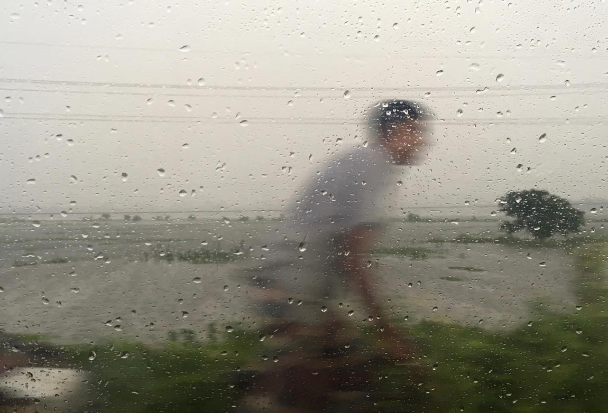
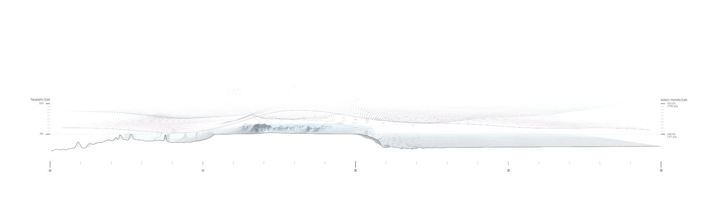
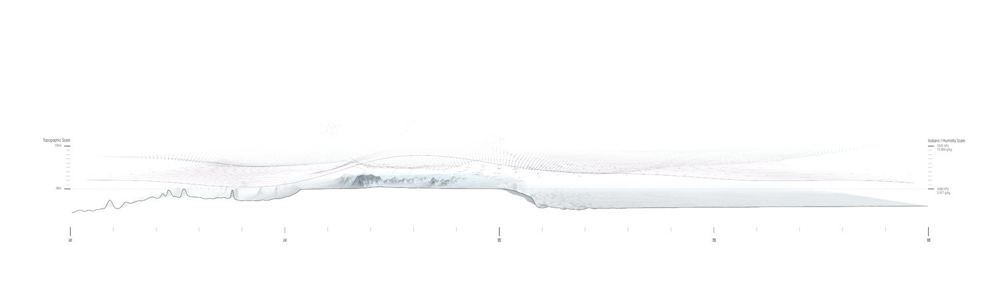
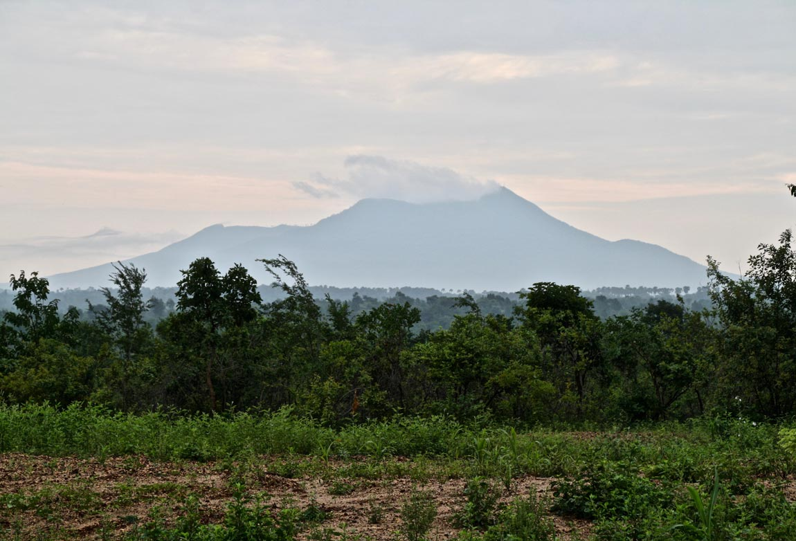
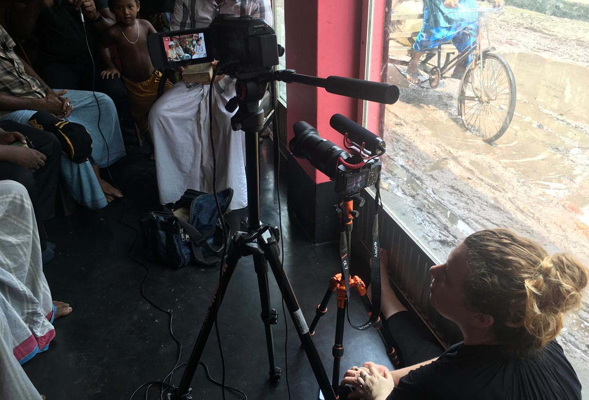
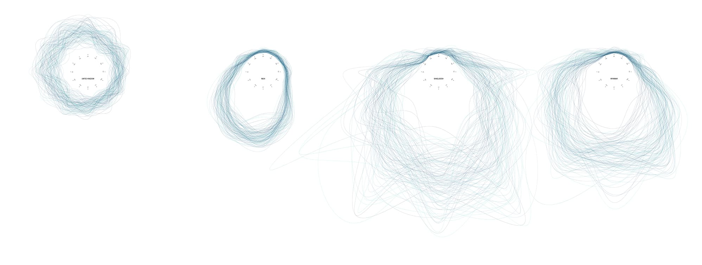
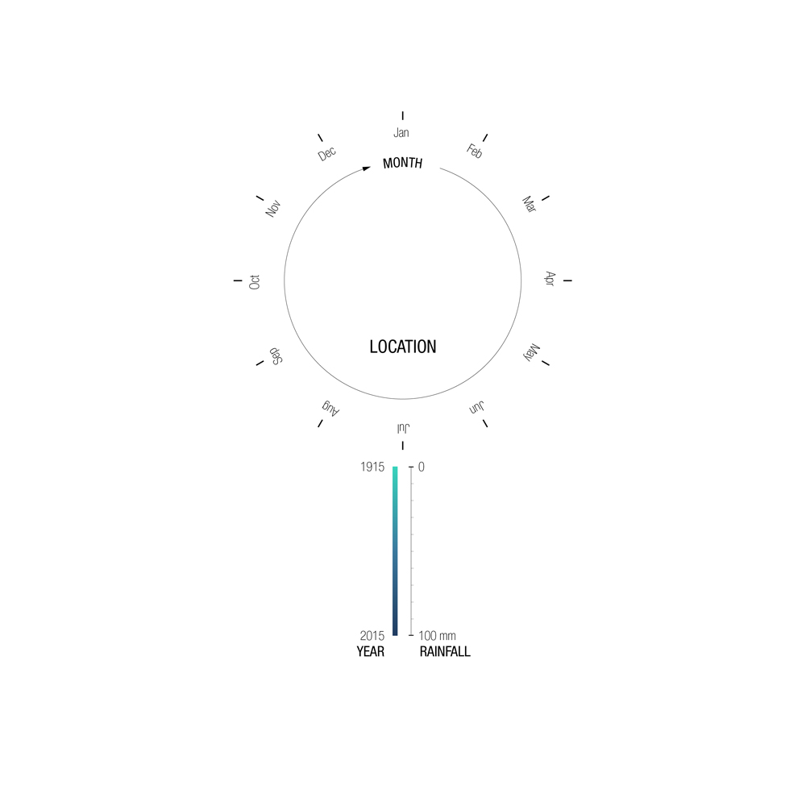

Fieldwork encounters with
monsoon time

Introduction
The monsoon’s distinctive temporality distinguishes it from other weather events. Dominant depictions of the monsoon highlight its temporal patterns, often representing ‘normal’ onset and withdrawal dates. Nevertheless, the localised behaviour of this powerful weather pattern often does not conform to such macroscale representations. Monsoon rhythms and tempos vary as weather interacts with landscapes, places, people and things.
 

Left and below: Centred over Chennai, these drawings convey the atmospheric conditions over the Arabian Sea, Indian Peninsula and Bay of Bengal during 2015. They communicate the entwined and complex relationships between air temperature, pressure and humidity and the role these play in the creation and driving of winds, moisture, clouds and aerosols.
Sensing monsoon time
Monsoon rhythms create temporal structures for human and non-human life at macro, meso and micro scales. Learning to understand these multiscalar rhythms, tempos and durations and their entanglement with social life is essential if we are to take the agencies of such processes seriously. During fieldwork, using an assortment of methods including walking, seasonal calendars, visual methods and sensory witnessing, we learned to perceive a multiplicity of monsoonal temporalities and temporal slippages from deep time to seasonal time to everyday time.
Walking deep time
The landscapes that Chennai, Dhaka and Yangon are situated within have been shaped by monsoonal forces over the longue duree. Walking these landscapes helped us to understand the temporal rhythms and material processes that formed them. Climbing Mount Popa, a dormant volcano in central Myanmar, we observed and felt patterns of erosion etched out by successive monsoon seasons under our feet. Sediments created through weathering offer insights into the earth systems, cycles and rhythms that produce monsoon time. By recording these rhythms, sedimentary ‘earth archives’ illuminate the array of nonhuman forces that shape the monsoon and its changing temporal patterns.
Drawing seasonal time
Changing atmospheric conditions define the seasons that divide the year for societies across the globe. South Asian calendars typically divide the year into the hot season, the cold season and the rainy season, the rains being the pivot of the year. During fieldwork in Bangladesh we drew monsoonal calendars with farmers, fishers, river nomads, and meteorologists. The calendars charted the planting, transplanting and harvesting of rice; the lifecycle and migrations of hilsa fish; the seasonal flux of rivers and breeding cycles of snakes; the meteorological seasons and patterns of storms and cyclones. Making each calendar revealed a multiplicity of human and nonhuman monsoonal attunements.

Above: Calendar depicting the breeding cycles of snakes and the seasonal migrations and livelihoods of Bede river nomads.
Above: Calendar depicting the breeding cycles and migrations of hilsa fish, according to meteorological and lunar periodicity, and seasonal fishing bans.
Above: Calendar depicting the meteorological seasons of Bangladesh and their juxtapositions with the seasons of the traditional Bangla calendar.
Above: Calendar depicting the agroecological seasons of Bangladesh, their influence on the sowing, planting, harvesting of rice, and seasonal slippages due to climate change.
Recording everyday time
Visual methods helped us to engage with the materiality, affective qualities and movements of everyday monsoonal weather-worlds. The changing weather influences clothing choices, shopping habits and leisure activities, religious practices, work and transport patterns as well as food and water consumption. People sense and mediate shifting monsoonal materialities through these practices, becoming enmeshed with weather through routine acts of dwelling. Recording everyday monsoonal moments visually helped us to sense the emplaced, differentiated, microscale rhythms and temporalities of a meteorological phenomenon vastly distributed in space and time.
Kolam
Kolam is a daily ritual practiced by Tamil Hindu women each morning in the thresholds of houses, temples and businesses. It involves drawing on washed thresholds with rice flour or chalk. Patterns are drawn with the tips of the fingers using pinches of flour held between the thumb and the first finger and letting the powder fall in a continuous line. Drawing is directed by a grid of pullis or dots that are encircled, looped or joined using straight or curved lines. Kolams are transient. They are created in a few minutes, but after a few hours, they disappear as insects or birds feed on the rice flour or wind or people’s footsteps erase them. Processes of making and unmaking are repeated as daily rhythms, the cycle beginning again each dawn.1
Temporal slippage
Across the Indian subcontinent monsoonal temporalities are changing. These meteorological shifts are often subtle and hard to enumerate, but they have significant implications for human and nonhuman life and the liveability of monsoonal cities. Short bursts of intense rain lead to flooding because impervious urban environments cannot absorb heavy rainfall over compressed timescales. Delayed onset and breaks in the monsoon of a week or more results in severe water shortages. Rising temperatures cause the duration of heatwaves to increase, amplifying urban heat island effects. Such changes are viscerally sensed by people enmeshed within monsoonal environments.
Temporal attunements
Engaging with a kaleidoscope of interconnected monsoonal temporalities helped us to understand the diverse human and nonhuman elements that give rise to monsoonal rhythms and how these become folded within landscapes, places, people and things. We also sensed how changing meteorological temporalities are affecting lived environments. The ecological crisis has drawn attention to the temporalities of the more-than-human world. Responding to the effects of anthropogenic climate change requires attuning to an array of more-than-human times and scales and considering our entanglements within these temporal pulses, pauses, circulations, ebbs and flows with more care.
 These ‘Monsoonal Clocks’ describe the monthly rainfall totals from 1905- 2015 for the UK, India, Bangladesh and Myanmar. Each coloured curve represents one year, its distance from the clock centre denotes the amount of rainfall for that month measured in millimetres. They aim to demonstrate the different cyclical rainfall patterns and amounts between locations, but also the extreme variability and outliers within this.
1 A. Kumari, ‘Significance of Kolam in Tamil Culture,’ Sahapedia, 03 July 2018, https://www.sahapedia.org/significance-of-kolam-tamil-culture.
Text by Beth Cullen
Design by Jonathan Cane.
Introduction
Drawings by John Cook.
Sources: Aerial Imagery: NASA Blue Marble Imagery; Climatic Data:
NOAA/NCEP CFSv2 Climate Forecast System + NASA Earth Observations;
Topography + Bathymetry: ETOPO1 Global Relief Model.
Photograph and video by Beth Cullen.
Sensing Monsoon Time
Photographs by Beth Cullen.
Walking Deep Time
Photographs by Beth Cullen and Lindsay Bremner.
Video by Beth Cullen.
Drawing Seasonal Time
Bede calendar drawn by Beth Cullen and facilitated by Babul Sutradhar
(RIB) in conversation with Bede community leaders.
Hilsa calendar drawn by Beth Cullen during conversations with Md. Abdul
Wahab (WorldFish) and Chandpur hilsa fishers.
Meteorological calendar drawn by Christina Geros and Beth Cullen in
conversation with meteorologist Kalim Malik at the Dhaka MET Office.
Agroecological calendar drawn by Beth Cullen in conversation with farmer
from Rajshahi region.
Photographs by Beth Cullen
Videos by Christina Geros (top left) and Beth Cullen (bottom left).
Recording Everyday Time
Photograph and videos by Beth Cullen.
Kolam
Photographs by Lindsay Bremner.
Video by Lindsay Bremner and Beth Cullen, edited by Lindsay Bremner.
Temporal Slippage
Video by Beth Cullen and Lindsay Bremner, edited by Beth Cullen.
Temporal Attunements
Drawing by John Cook.
Sources: Mean Historical Rainfall Dataset: Produced by the Climatic
Research Unit (CRU) of University of East Anglia (UEA).